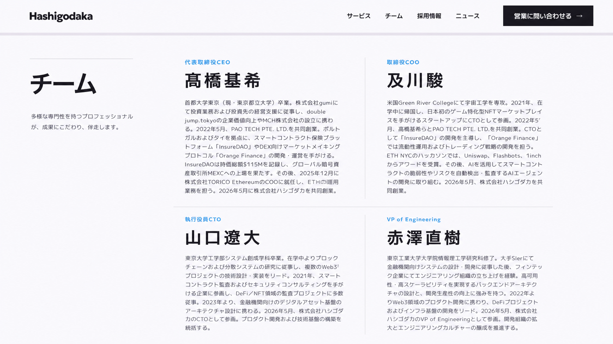
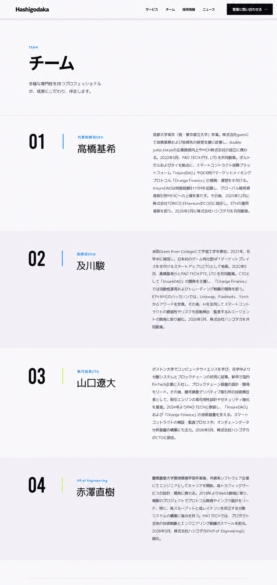
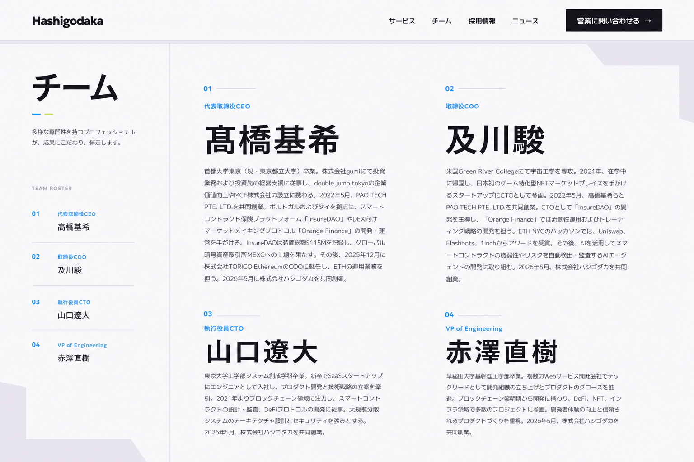

A
2×2の現行骨格を保ち、名前の強さ、罫線、本文行長、白場で編集誌面化。4名を同時に比較しやすい密度。

B
一人ずつ横長の章として積み重ねる構成。番号、氏名、プロフィールを一続きに読み、各人へ同じ画面占有量を与える。

C
左に名鑑索引、右に大きな氏名と本文を置く非対称構成。名前の記憶性と一覧性を分け、チーム全体を一枚の誌面として見せる。
比較用・実装外
写真なし／4名のプロフィール本文を常時表示
色・ヘッダー・コンテンツ条件は共通

2×2の現行骨格を保ち、名前の強さ、罫線、本文行長、白場で編集誌面化。4名を同時に比較しやすい密度。

一人ずつ横長の章として積み重ねる構成。番号、氏名、プロフィールを一続きに読み、各人へ同じ画面占有量を与える。

左に名鑑索引、右に大きな氏名と本文を置く非対称構成。名前の記憶性と一覧性を分け、チーム全体を一枚の誌面として見せる。